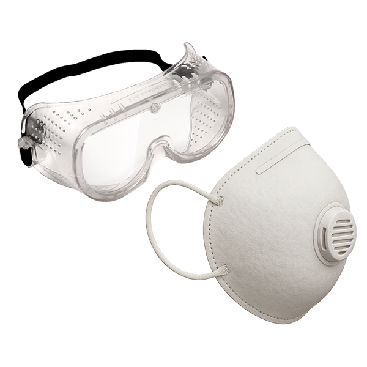
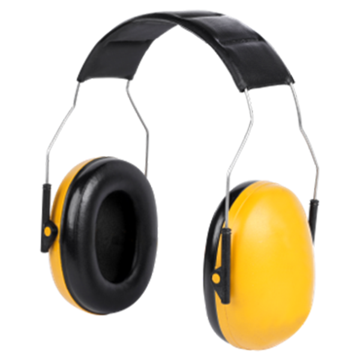
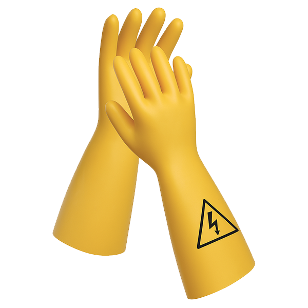
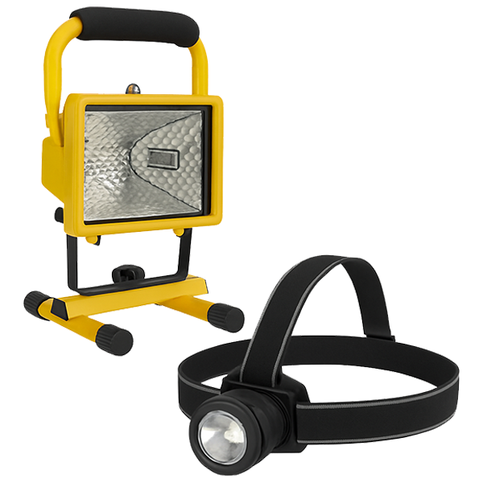
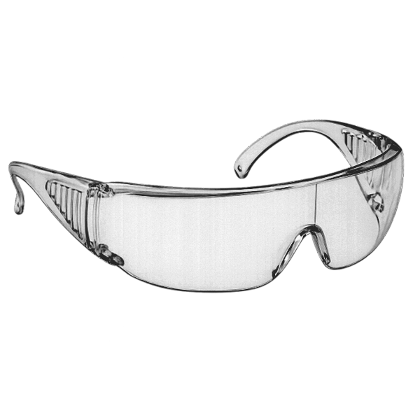
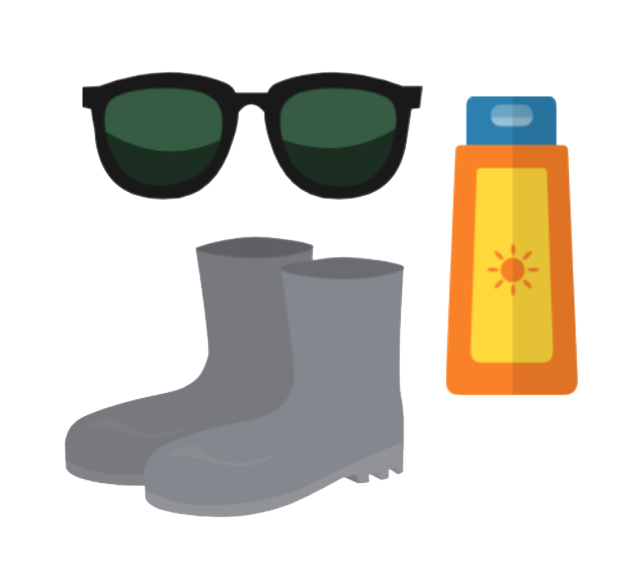

Step 1. Prepare for your work.
Make sure your tools and protective equipment are inspected.
Watch video about inspectionAlways wear a helmet, safety shoes, and high-visibility clothing on the construction site.
Risk → Protection
Airborne dust / small particles
(e.g., drilling or sawing)

Loud noise

Rough materials / sawing
Vibrations (for example when drilling)
Working at height
Electricity

Dark areas

Eye hazards (e.g., grinding)

Weather conditions

Step 2. Just before you start working
Perform a Last‑Minute Risk Assessment.
If any answer is “no,” arrange that first. Only then start working.
Step 3. During the work
- Keep thinking about safety
- Identify hazards and think of safer options
- Clean up between tasks
- Help others work safely
Step 4. When you have finished working
Before you go home:
- Tidy up (Tip: clean up in between; it saves work afterward.)
- Check if your tools are intact and complete
- Reflect on today: what went well, and what can improve? Both in work and safety